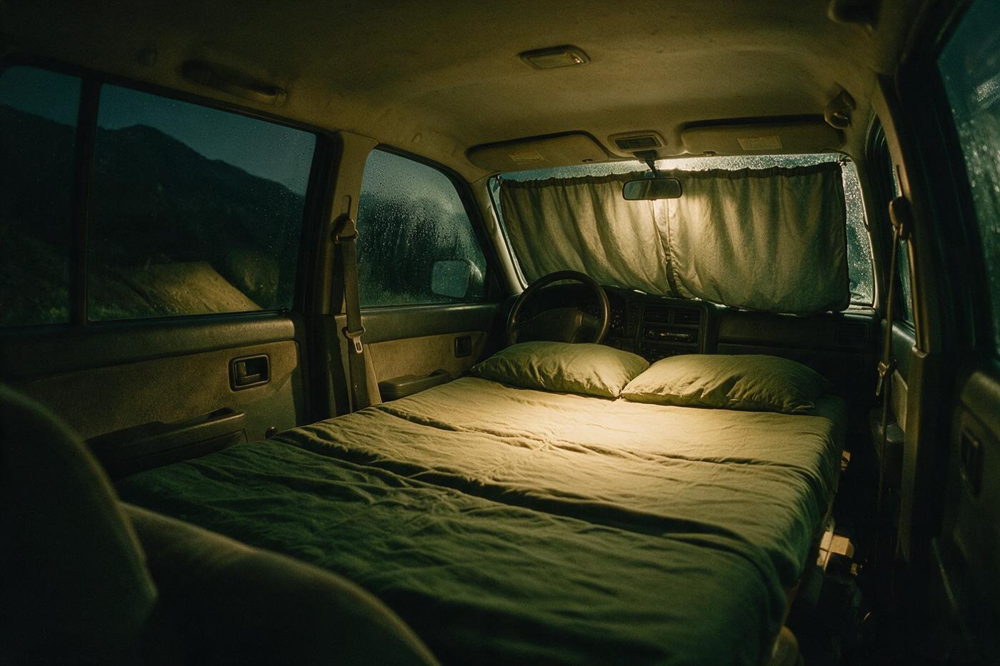
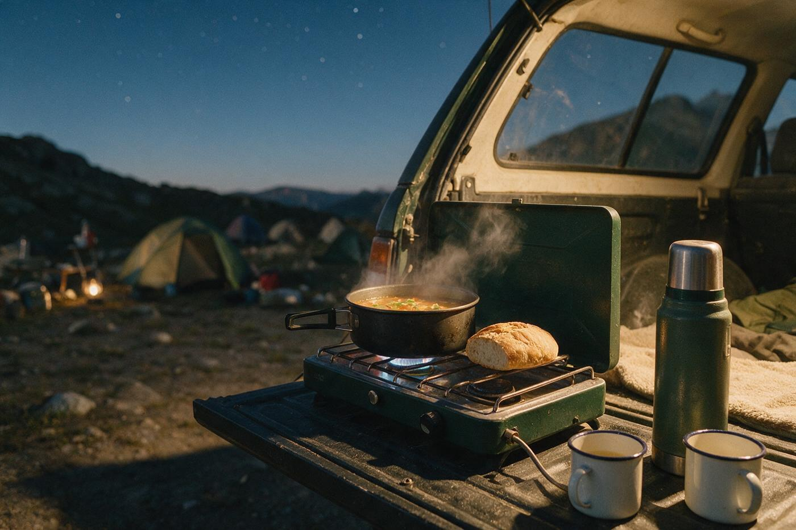

网上攻略不可执行
攻略告诉你"沿途很美"，但不告诉你今天限行哪一段、几点前必须过垭口、 哪个加油站八点就关门。我们每条线路三次实地踩线，把每次的取舍记录在案。
3 次实地踩线12 章手册
而是路上的不确定性：路况变不变、限行怎么算、油够不够、补给点还在不在、 车坏在半路怎么办、凌晨三点最近的医院在哪。
攻略告诉你"沿途很美"，但不告诉你今天限行哪一段、几点前必须过垭口、 哪个加油站八点就关门。我们每条线路三次实地踩线，把每次的取舍记录在案。
真正难的不是列清单，是空间工程：座椅放倒后还能压住什么？ 凹坑怎么找平？哪些东西要随手可取、哪些要压底？ 我们输出带俯视标注的布局图，并做装载三问校验。
我们的继续还是撤退，用数字决定：降雨 25mm、阵风 8 级、能见度 50m、 静息血氧 80%、夜间零下 15 度——每一项都对应一个不讨论的动作。
从一次咨询到整场活动，你可以只买其中一项，也可以把它们串成一次完整的旅程。
你有车有想法，缺一份能照着走的路书
把"买什么、放哪里"变成一张工程图
你最担心的那部分，交给别人
专业领队在身边，你只管看风景
边走边拍，出团即出片
为汽车、器材、文旅与企业做专场
"能把这些东西装完不难，很多车都能做到，但是要想装完过后还能保持一张 1 米 9 的大床不变，我觉得没几辆车能行。"
两位同行者、一辆车、一条横穿川西—西藏—阿里—可可西里的大环线， 15,000 公里全程基本不住酒店。这份记录里最值钱的不是风景， 是那些把"两个人的经验"变成"可复制方法"的细节：


我们的动作：把这套方法从"一个人的经验"升级为 "参数化清单 + 空间布局图 + 阈值决策表 + 救援医疗白名单"， 再用 8 项真实高原实测去补上案例里留下的空白。
八个步骤，每一步都有明确的交付物与时间点。
30 分钟结构化问卷：人数、车型、天数、预算、驾驶经验、体力、住宿偏好、影像需求。
3 个工作日：路况、季节窗口、许可与通行证、车辆能力匹配。不可行会明确告知并给替代方案。
7 个工作日：A / B 两版，分别对应"风景强度优先"与"车程与成本优先"。
60 分钟线上讲解，逐日过行程、风险点与装备方案，当场改稿。
第 14 天交付电子手册（路书 / 补给 / 医疗 / 物资 / 布局 / 机位 / 风险）+ 纸质路书。
第 2 天线上说明会（录屏留档）：路况、驾驶规范、装备使用、应急流程。
专属顾问群答疑、每日状态确认、天气与路况动态调整。
第 5 天成片交付、满意度回收、案例归档；实测结论回写知识库供下一位客户使用。
不承诺"绝不堵车""一定看到日出""零事故"。 我们承诺的是：不顺的时候有人管、赔得起、不失联。
神秘客实地核验 + 每次踩线更新坐标与营业时间。 客户可凭手册在加油站当面验证，不存在"攻略上的加油站"。
24h 值班调度台 + 两家全国救援协议 + 每条线路的备用车与租车白名单， 费用公司先行垫付，48 小时内结案。
《空间布局图》+ 装载三问校验 + 出发前按图实装复核。 装不下的问题在出发前解决，不在路上解决。